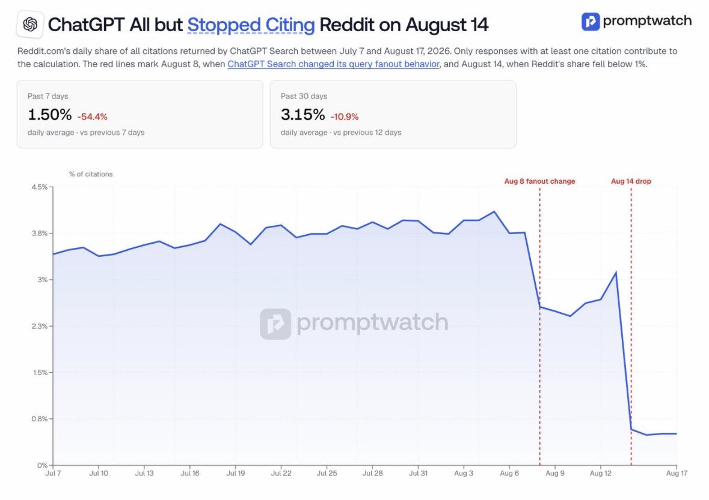

The short version: On August 14, 2026, Reddit's share of ChatGPT Search citations collapsed by about 86 percent, from a steady 3.8 percent down to roughly 0.5 percent, according to a new Promptwatch report. The likely driver is a change in how ChatGPT searches: it now leans on site specific operators that go straight to established domains instead of scanning the open web first. I do not think the real story here is Reddit. I think it is that any AI visibility built on one earned-mention channel can disappear in a week, and the sites still getting cited are the ones with their own clear, structured answers already in place.
I spend a good part of my week watching how AI search tools decide what to cite, because that is the part of my job, building AEO and GEO systems for clients, that changes the fastest. So when a TikTok from journalist Taylor Lorenz landed in my feed this week describing a sudden Reddit citation collapse in ChatGPT, I did what I always do with a claim like that before repeating it: I went and checked the primary source.
What actually happened, in real numbers
Reddit held a steady 3.8 percent share of ChatGPT Search citations from mid July through early August 2026, according to Promptwatch's own tracking data. On August 8, that share dropped to the mid 2s percent. Then on August 14 it fell off a cliff: an average of roughly 0.5 percent over the following days, an 86 percent drop from where it had been sitting for weeks. Reddit citations did not go to zero. They went from load-bearing to barely present, in six days.
One correction worth making here: the TikTok that first flagged this rounded the numbers differently than Promptwatch's own published data (it described something closer to 15 percent falling to 0 percent). I am using Promptwatch's actual figures, since that is the primary source, and they are corroborated by Forbes's coverage of the same report, though outlets differ slightly on the exact percentage (some report closer to 81 percent, Promptwatch's own chart puts it nearer 86). Checking the number before repeating it is the whole point of this post.

This was not a Reddit-only story either. Other user-generated content platforms lost citation share over the same window, including YouTube and TikTok, which points at a broader reweighting of how ChatGPT treats forum and social content generally, not a Reddit-specific penalty.
Why one operator change can move a number this much
The leading theory: in early August 2026, ChatGPT began using site specific search operators when it looks things up, meaning it goes straight to particular domains instead of scanning the open web as a first pass. That shift shows up elsewhere in the data too. Links to documentation and help center pages now make up 32 percent of ChatGPT's citations. Citations to small company pages dropped from 66 percent down to 32 percent over the same window, while citations to established companies like Salesforce, Google, and Shopify rose.
Reddit was also, separately, locking down its platform against AI scrapers around the same time, while ramping up its own AI features (turning Reddit posts into AI generated podcasts and short videos). Promptwatch itself is careful to note that its data shows when the shift happened, not definitively why. A data collection issue on their end has not been fully ruled out. But the site operator theory is the leading explanation, and it lines up with what I am seeing across client accounts this month.
This is not really a story about Reddit
Reddit's citation dominance had already become a target for gaming. Whole agencies built a business around getting brands mentioned in Reddit threads specifically so ChatGPT would cite them. That gaming is part of why AI answers built on Reddit content got unreliable in the first place. It is the same mechanism behind the infamous Google AI Overview that once told someone to put glue on pizza to help the cheese stick, an answer traced back to a joke Reddit post that got treated as fact.
A tiny tweak to how one AI tool searches can move an entire information ecosystem overnight. Reddit is just the most visible example this month.
So the lesson is not "Reddit is dead" or "stop posting on Reddit." The lesson is that any AI visibility strategy built on one earned-mention channel, whichever platform it happens to be, is one algorithm update away from losing most of its citation weight.
What this means if you are not trying to go viral on Reddit
This is the exact failure mode I watch for when I audit a client's AI visibility. A nonprofit with one strong source of AI mentions, a single directory listing, one press writeup, a thread in a niche forum, and nothing of its own backing that up. A small service business whose only AI presence comes from a single review aggregator's page. In both cases, when that one channel's citation weight shifts, and it will, there is nothing left standing.
What survives a shakeup like this month's is content you actually own: clear FAQ answers written in plain language, entity definitions that state exactly what your organization does, and a site structured so an AI tool can find a direct two-sentence answer without needing to scrape a third-party platform first. It is the same reason every post on this site ships with a plain-language FAQ block and a sourced stat near the top. Those two things do not depend on any one platform choosing to keep pointing at you.
What to actually do about it
I go deeper on the mechanics of getting cited by AI tools in general, not just the Reddit angle, in how to get cited by AI search.
Frequently Asked Questions
Reddit held a steady 3.8% share of ChatGPT Search citations from July 18 to August 7, 2026, according to Promptwatch. On August 8 that fell to the mid 2s percent, and on August 14 it collapsed further to under 1%, averaging about 0.5% over the following days. That is roughly an 86% drop in six days.
The leading theory is a change in how ChatGPT searches. In early August 2026 it began using site specific search operators, going straight to particular domains instead of scanning the open web first. That shifted citations toward established company docs and help centers. Reddit also locked down its platform against AI scrapers around the same time. Promptwatch's own report notes this shows when the shift happened, not definitively why.
It means Reddit is no longer a reliable primary channel for AI visibility. Reddit's citation dominance had already become a target for gaming, agencies specifically worked to get brands mentioned in Reddit threads to be cited by ChatGPT, and that gaming was part of why AI answers built on Reddit content got unreliable. The lesson is not that Reddit is dead. It is that any AI visibility built on one earned-mention channel can disappear in a week.
Build your own structured, quotable content instead of relying on one external platform to keep mentioning you. Clear FAQ answers, entity definitions, and organized help content on your own site are what keep showing up in AI answers even when one platform's citation weight shifts, because they do not depend on someone else's algorithm staying favorable.
Sources & Credit
- Spotted via Taylor Lorenz on TikTok, who reported on the Promptwatch findings (2026-08-20).
- Promptwatch. (2026). Reddit Citations Are Dropping in ChatGPT, the primary data source for the citation share figures cited above.
- Forbes. (2026, August 20). Reddit Nearly Vanishes From ChatGPT Citations After OpenAI Search Change, corroborating coverage.
- Search Engine Journal. (2026). Why Reddit's ChatGPT Citation Drop Isn't Fully Explained, on the August 8 query fanout change.
- Inc. (2026). ChatGPT Suddenly Cut Reddit Citations by 81 Percent, New Report Found, on the broader user-generated-content citation decline.

Want the business and agency version?
What Reddit's Citation Drop Teaches About AEO
The same story, written for teams building an AI visibility strategy, on my agency site.